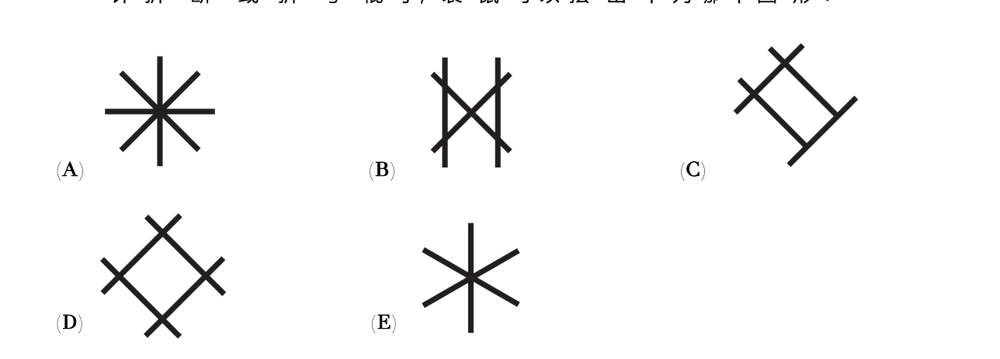

一只袋鼠用三根这样的棍子来摆图形。不允许折断或折弯棍子，袋鼠可以摆出下列哪个图形？
A kangaroo laid out 3 sticks like this to make a shape. It is not allowed to break or bend the sticks. Which shape could the kangaroo make?

一整条穿过中心（或两端）的直线 = 1 根棍子。点亮后再点可取消。看看哪张图正好用了 3 根。
One full straight line (through the figure) = 1 stick. Tap to toggle. Find which figure uses exactly 3.
想好后，选出你的答案：
When ready, pick your answer: